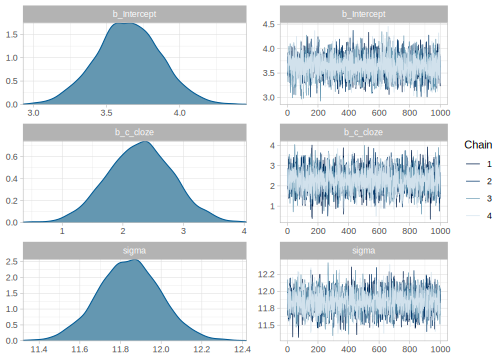
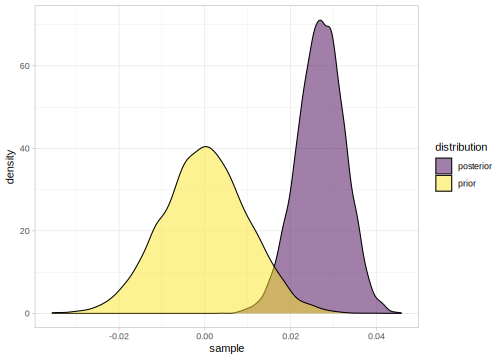
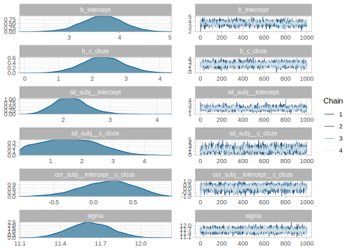
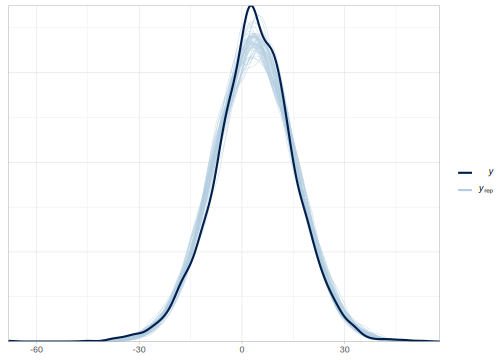

5.1 A hierarchical normal model: The N400 effect
Event-related potentials (ERPs) allow scientists to observe electrophysiological responses in the brain measured by means of electroencephalography (EEG) that are time-locked to a specific event (i.e., the presentation of the stimuli). A very robust ERP effect in the study of language is the so-called N400. It has been shown that words with low predictability are accompanied by an N400 effect in comparison with high-predictable words, this is a relative negativity that peaks around 300-500 after word onset over central parietal scalp sites (first noticed in Kutas and Hillyard 1980, for semantic anomalies and in 1984 for low predictable word; for a review: Kutas and Federmeier 2011); see Figure 5.1.
FIGURE 5.1: Typical ERP for the grand average across the N400 spatial window (central parietal electrodes: Cz, CP1, CP2, P3, Pz, P4, POz) for high and low predictability nouns (specifically from the constraining context of the experiment reported in Nicenboim, Vasishth, and Rösler 2020a). The x-axis indicates time in seconds and the y-axis indicates voltage in microvolts (note that unlike many EEG/ERP plots, the negative polarity is plotted downwards).
In 1, for example, the continuation ‘paint’ has higher predictability than the continuation ‘dog’, and thus we would expect a more negative signal, that is, an N400 effect, in ‘dog’ in (b) in comparison with ‘paint’ in (a). It is often the case that predictability is measured with a Cloze task (see section 1.4).
- Example from Kutas and Hillyard (1984)
- Don’t touch the wet paint.
- Don’t touch the wet dog.
The EEG data are typically recorded in tens of electrodes every couple of milliseconds, but for our purposes (i.e., for learning about Bayesian hierarchical models), we can safely ignore the complexity of the data. A common way to simplify the high-dimensional EEG data when we are dealing with the N400 is to focus on the average amplitude of the EEG signal at the typical spatio-temporal window of the N400 (see for example Frank et al. 2015).
For this example, we are going to focus on the N400 effect for critical nouns from a subset of the data of Nieuwland et al. (2018). Nieuwland et al. (2018) presented a replication attempt of an original experiment of DeLong, Urbach, and Kutas (2005) with sentences like (2)
- Example from DeLong, Urbach, and Kutas (2005)
- The day was breezy so the boy went outside to fly a kite.
- The day was breezy so the boy went outside to fly an airplane.
We’ll ignore the goal of original experiment (DeLong, Urbach, and Kutas 2005), and its replication (Nieuwland et al. 2018). We are going to focus on the N400 at the final nouns in the experimental stimuli. In example (2), for example, the final noun ‘kite’ has higher predictability than ‘airplane’, and thus we would expect a more negative signal in ‘airplane’ in (b) in comparison with ‘kite’ in (a).
To speed-up computation, we’ll restrict the dataset to the participants from the Edinburgh lab; the entire dataset can be found in https://osf.io/q7dsk/.
df_eeg_data <- read_tsv("data/public_noun_data.txt") %>%
filter(lab=="edin") %>%
# choose only the relevant columns:
select(subject, cloze, item, n400) %>%
# we simplify the subjects id
mutate(subject = as.factor(subject) %>% as.numeric())
df_eeg_data## # A tibble: 2,827 x 4
## subject cloze item n400
## <dbl> <dbl> <dbl> <dbl>
## 1 1 0 101 7.08
## 2 1 3 102 -0.68
## 3 1 100 103 1.39
## 4 1 93 104 22.8
## 5 1 0 105 1.61
## # … with 2,822 more rows## # A tibble: 1 x 1
## n
## <int>
## 1 37In the data, the Cloze is in percentages, we’ll transform it to proportions and center it before using it as a predictor in c_cloze.
df_eeg_data <- df_eeg_data %>%
mutate(c_cloze= cloze/100 - mean(cloze/100) )
df_eeg_data$c_cloze %>% summary() ## Min. 1st Qu. Median Mean 3rd Qu. Max.
## -0.471 -0.441 0.029 0.000 0.429 0.529One nice aspect of using averages of EEG data is that they are roughly normally distributed. This allows us to use the Normal likelihood. Here is a histogram showing the distribution of the data:
df_eeg_data %>% ggplot(aes(n400)) +
geom_histogram(binwidth = 4, colour="gray", alpha = .5, aes(y = ..density..)) +
stat_function(fun = dnorm, args = list(mean = mean(df_eeg_data$n400),
sd = sd(df_eeg_data$n400))) +
xlab("Average voltage in microvolts for the N400 spatiotemporal window")
FIGURE 5.2: Histogram of the N400 averages for every trial in gray; density plot of a normal distribution in black.
5.1.1 Complete-pooling model (\(M_{cp}\))
We’ll start from the simplest model which is basically the linear regression we encountered in the preceding chapter.
5.1.1.1 Model assumptions
This model, call it \(M_{cp}\), makes the following assumptions.
- The EEG averages for the N400 spatiotemporal window are normally distributed.
- Observations are independent.
- There is a linear relationship between cloze and the EEG signal for the trial.
Note that this model is incorrect for these data due to assumption 2 being violated.
With the last assumption, we are saying that the difference in the average signal when we compare nouns with Cloze probability 0-.1, .1-.2, .2-.3, and so forth is the same. Notice that this is an assumption, and it may not necessarily be the case in the actual data. This means that we are going to get a posterior for \(\beta\) conditional on the assumption that the linear relationship holds. Even if it approximately holds, we still don’t know how much we deviate from this assumption. We’ll come back to this issue in chapters 9-10 when we deal with model comparison.
We can now decide on a likelihood and priors:
5.1.1.2 Likelihood and priors
A normal likelihood seems reasonable for these data:
\[\begin{equation} signal_n \sim Normal( \alpha + c\_cloze_n \cdot \beta,\sigma) \tag{5.1} \end{equation}\]
where \(n =1, \ldots, N\), and \(signal\) is the dependent variable (average signal in the N400 spatiotemporal window in microvolts). The variable \(N\) represents the total number of data points.
As always we need to rely on our previous knowledge and domain expertise to decide on priors. We know that ERPs (signals time-locked to a stimulus) have mean amplitudes of a couple of microvolts, this is easy to see in any plot of the EEG literature. This means that we don’t expect the effect of our manipulation to exceed, say, 10 \(\mu V\). As before we’ll assume that effects can be negative or positive. We can quantify our prior knowledge regarding plausible values of \(\beta\) as normally distributed centered at zero with a standard deviation of 10 \(\mu V\).
If the signal for each ERP is baselined, that is, the mean signal of a time window before the time window of interest is subtracted from the time window of interest, then the mean signal would be relatively close to 0. Since we know that the ERPs were baselined in this study, we expect that the grand mean of our signal should be relatively close to zero. Our prior for \(\alpha\) is then normally distributed centered in zero with a standard deviation of 10 \(\mu V\).
The standard deviation of our signal distribution is harder to guess. We know that EEG signals are quite noisy, and that the standard deviation must be higher than zero. Our prior for \(\sigma\) is a truncated normal distribution with location zero and scale as 50. Recall that since we truncate the distribution, the parameters location and scale do not correspond to the mean and standard deviation of the new distribution; see Box 4.1.
We can draw random samples from this distribution and calculate their mean and standard deviation:
## mean
## 39.7 30.1So we are essentially saying that we assume a prior that we will find the true standard deviation of the signal in the following interval with 95% probability:
## 2.5% 97.5%
## 1.53 112.06To sum up, we are going to use the following priors:
\[\begin{equation} \begin{aligned} \alpha &\sim Normal(0,10)\\ \beta &\sim Normal(0,10)\\ \sigma &\sim Normal_{+}(0,50) \end{aligned} \end{equation}\]
A model such as \(M_{cp}\) is sometimes called a fixed-effects model: all the parameters are fixed and do not vary from subject to subject or from item to item. A similar frequentist model would correspond to fitting a simple linear model using the lm function: lm(n400 ~ 1 + cloze, data = df_eeg_data).
We fit this model in brms as follows (the default family is gaussian() so we can omit it). As with lm, by default an intercept is fitted and thus n400 ~ c_cloze is equivalent to n400 ~ 1 + c_cloze:
fit_N400_cp <- brm(n400 ~ c_cloze,
prior =
c(prior(normal(0, 10), class = Intercept),
prior(normal(0, 10), class = b, coef = c_cloze),
prior(normal(0, 50), class = sigma)),
data = df_eeg_data
)For now, we’ll check the summary and plot the posterior of the model. To save space we use the function posterior_summary(), but it’s a good idea to inspect the full summary.
## Estimate Est.Error Q2.5 Q97.5
## b_Intercept 3.65 0.221 3.22 4.08
## b_c_cloze 2.28 0.540 1.22 3.35
## sigma 11.84 0.154 11.54 12.15
## lp__ -11005.84 1.183 -11008.92 -11004.49
5.1.2 No-pooling model (\(M_{np}\))
One of the assumptions of the previous model is clearly wrong: observations are not independent, they are clustered by participant (and also by the specific item, but we’ll ignore this until section 5.1.4). It is reasonable to assume that EEG signals are more similar within participants than between them. The following model assumes that each participant is completely independent from each other.12
5.1.2.1 Model assumptions
- EEG averages for the N400 spatio-temporal window are normally distributed.
- Every participant’s model is fit independently of the other participants; the participants have no parameters in common (an exception is the standard deviation; this is the same for all participants).
- There is a linear relationship between cloze and the EEG signal for the trial.
What likelihood and priors can we choose here?
5.1.2.2 Likelihood and priors
The likelihood is a normal distribution as before:
\[\begin{equation} signal_n \sim Normal( \alpha_{subj[n]} + c\_cloze_n \cdot \beta_{subj[n]},\sigma) \end{equation}\]
But notice that this model is actually fitting one linear model for each participant, with a single standard deviation \(\sigma\) across all participants.
As before, \(n\) represents each observation, that is, the \(n\)th row in the data frame, which has \(N\) rows, and now \(i\) identifies the participant. The notation \(subj[n]\), which roughly follows Gelman and Hill (2007), identifies the participant index; for example, if \(subj[10]=3\), then the \(10\)th row of the data-frame is from participant \(3\).
We define the priors as follows:
\[\begin{equation} \begin{aligned} \alpha_i &\sim Normal(0,10)\\ \beta_i &\sim Normal(0,10)\\ \sigma &\sim Normal_+(0,50) \end{aligned} \end{equation}\]
In brms, such a model can be fit by removing the common intercept with 0 +. Instead, we force the model to estimate one intercept and one slope for each level of subject. The by-subject intercepts are indicated with factor(subject) and the by-subject slopes with c_cloze:factor(subject). It’s very important to specify that subject should be treated as a factor and not as a number; we don’t assume that subject number 3 will show 3 times more positive (or negative) average signal than subject number 1! The model fits 37 independent intercepts and 37 independent slopes. By setting a prior to class = b and omitting coef, we are essentially setting identical priors to all the intercepts and slopes of the model. Notice that the parameters are independent from each other, it’s only our previous knowledge about their possible values (encoded in the priors) that is identical. We can set different priors to each intercept and slope, but that will mean to set 74 priors!
fit_N400_np <- brm(n400 ~ 0 + factor(subject) + c_cloze:factor(subject),
prior =
c(prior(normal(0, 10), class = b),
prior(normal(0, 50), class = sigma)),
data = df_eeg_data)For this model, printing a summary means printing the 75 parameters (\(\alpha_{1,...,37}\), \(\beta_{1,...,37}\), and \(\sigma\)). We could do this as always by printing out the model results: just type fit_N400_np. Instead, one can plot \(\beta_{1,..,37}\) using bayesplot. (brms also a includes a wrapper to this function called stanplot). We can peek at the internal names that brms gives to the parameters with parnames(fit_N400_np); they are b_factorsubject, then the subject index and then :c_cloze. The code below changes the subject labels back to their original numerical indices and plots them in Figure 5.3. The subjects are ordered by the magnitude of their mean effects.
The model \(M_{np}\) does not estimate a unique population-level effect; instead, there is a different effect estimated for each subject. However, given the posterior means from each subject, it is still possible to calculate the average of these estimates \(\hat\beta_{1,...,n}\):
# parameter name of beta by subject:
ind_effects_np <- paste0("b_factorsubject",unique(df_eeg_data$subject), ":c_cloze")
beta_across_subj <- posterior_samples(fit_N400_np, pars=ind_effects_np)%>% rowMeans()
# We calculate the average of these estimates
(grand_av_beta <- tibble(mean = mean(beta_across_subj),
lq = quantile(beta_across_subj, c(.025)),
hq = quantile(beta_across_subj, c(.975))))## # A tibble: 1 x 3
## mean lq hq
## <dbl> <dbl> <dbl>
## 1 2.19 1.17 3.21The 95% credible interval of this overall mean effect is plotted in Figure 5.3 as two vertical lines together with the effect of Cloze probability for each subject (ordered by effect size).
# We make a table of beta by subject
beta_by_subj <- posterior_summary(fit_N400_np, pars=ind_effects_np) %>%
as_tibble() %>%
mutate(subject = 1:n()) %>%
## reorder plot by magnitude of mean:
arrange(Estimate) %>%
mutate(subject = factor(subject, levels = subject))
# We plot:
ggplot(beta_by_subj, aes(x = Estimate, xmin = Q2.5, xmax = Q97.5, y = subject)) +
geom_point() +
geom_errorbarh() +
geom_vline(xintercept = grand_av_beta$mean) +
geom_vline(xintercept = grand_av_beta$lq, linetype = "dashed") +
geom_vline(xintercept = grand_av_beta$hq, linetype = "dashed") +
xlab("By-subject effect of cloze probability in microvolts")FIGURE 5.3: 95% credible intervals of the effect of Cloze probability for each subject according to the no pooling model.
5.1.3 Varying intercept and varying slopes model (\(M_{v}\))
One major problem with the no-pooling model is that we ignore completely that the subjects were after all doing the same experiment. We fit each subject’s data ignoring the information available in the other subjects’ data. The no-pooling model is very likely to overfit the individual subjects’ data; we are likely to ignore the generalities of the data and we may end up overinterpreting the noise. The model can be modified to explicitly assume that the subjects have an overall effect common to all the subjects, with the individual subjects deviating from this common effect.
Assuming that there is an overall effect that is common to the subjects will result in the estimation of posteriors for each participant being also influenced by what we know about all the subjects together. We’ll first fit a hierarchical model with uncorrelated varying intercept and slope.13
5.1.3.1 Model assumptions
- EEG averages for the N400 spatio-temporal window are normally distributed.
- Each subject deviates to some extent (this is made precise below) from the grand mean and from the mean effect of predictability. This implies that there is some between-subject variability in the individual-level intercept and slope adjustments by subject.
- There is a linear relationship between cloze and the EEG signal.
5.1.3.2 Likelihood and priors
The likelihood now incorporates the assumption that both the intercept and slope are adjusted by participant.
\[\begin{equation} signal_n \sim Normal(\alpha + u_{1,subj[n]} + c\_cloze_n \cdot (\beta+ u_{2,subj[n]}),\sigma) \end{equation}\]
\[\begin{equation} \begin{aligned} \alpha &\sim Normal(0,10)\\ \beta &\sim Normal(0,10)\\ u_1 &\sim Normal(0,\tau_{u_1})\\ u_2 &\sim Normal(0,\tau_{u_2})\\ \tau_{u_1} &\sim Normal_+(0,20) \\ \tau_{u_2} &\sim Normal_+(0,20) \\ \sigma &\sim Normal_+(0,50) \end{aligned} \end{equation}\]
In this model each subject has their own intercept adjustment, \(u_{1,subj}\), and slope adjustment, \(u_{2,subj}\).14 If \(u_{1,subj}\) is positive, the subject will have a more positive EEG signal than the grand mean average. If \(u_{2,subj}\) is positive, the subject will have a more positive EEG response to a change of one unit in c_cloze than the overall mean effect. The parameters \(u\) are sometimes called random effects and thus a model with fixed effects (\(\alpha\) and \(\beta\)) and random effects is called a mixed model. However, random effects have different meanings in different contexts. To avoid ambiguity, brms calls these parameters group-level effects. Notice that since we are estimating \(\alpha\) and \(u\) at the same time and we assume that the average of the \(u\)’s is 0 (since it is assumed to be normally distributed with mean 0), what is common between the subjects, the grand mean, is estimated as the intercept \(\alpha\), and the deviations of individual subjects’ means from this grand mean are the adjustments \(u_1\). Similarly, the mean effect of cloze is estimated as \(\beta\), and the deviations of individual subjects’ mean effects of cloze from \(\beta\) are the adjustment \(u_2\). The standard deviations of these two adjustment terms, \(\tau_{u_1}\) and \(\tau_{u_2}\), respectively, represent between participant variability; see also Box 5.1.
Thus, the model \(M_{v}\) has three standard deviations: \(\sigma\), \(\tau_{u_1}\) and \(\tau_{u_2}\). In statistics, it is conventional to talk about variances (the square of these standard deviations); for this reason, these standard deviations are also (confusingly) called variance components. The variance components \(\tau_{u_1}\) and \(\tau_{u_2}\) characterize between-subject variability, and the variance component \(\sigma\) characterizes within-subject variability.
Notice that the by-subject adjustments \(u_1\) and \(u_2\) are parameters in the model, and therefore have priors defined on them. Parameters that appear in the prior specifications for parameters, such as \(\tau_u\), are often called hyperparameters, and the priors on such hyperparameters are called hyperpriors. Thus, the parameter \(u_1\) has \(Normal(0,\tau_{u_1})\) as a prior; \(\tau_{u_1}\) is a hyperparameter, and the hyperprior on \(\tau_{u_1}\) is \(Normal(0,20)\).15
In general, the standard deviations for the by-subject adjustments are smaller than the standard deviation of the observations (which is the within-subjects standard deviation). That is, usually the between-subject variability in the intercepts and slopes is smaller than the within-subjects variability in the data. For this reason, reducing the scale of the truncated normal distribution to \(20\) (in comparison to \(50\)) seems reasonable for the priors of the \(\tau\) parameters. As always, we can do a sensitivity analysis to verify that our priors are reasonably uninformative (if we intended them to be uninformative).
Why does \(u\) have a mean of 0?
Because we want \(u\) to capture only differences between subjects, we could achieve the same by assuming the following relationship between the likelihood and the intercept and slope:
\[\begin{equation} \begin{aligned} signal_n &\sim Normal(\alpha_{subj[n]} + \beta_{subj[n]} \cdot c\_cloze_n, \sigma) \\ \alpha_i &\sim Normal(\alpha,\tau_{u_1})\\ \beta_i &\sim Normal(\beta,\tau_{u_2})\\ \end{aligned} \end{equation}\]
And in fact, that’s another common way to write the model.
Why do the adjustments \(u\) have a normal distribution?
Mostly because of convention, that’s the way it’s implemented in most frequentist mixed models. But also because if we don’t know anything about the distribution besides its mean and variance, the normal distribution is the most conservative assumption (see also chapter 9 of McElreath 2015).
For now, we are assuming that there is no relationship (no correlation) between the by-subject intercept and slope adjustments \(u_1\) and \(u_2\); as in lmer, this lack of correlation is indicated using in brms using the double pipe ||. In brms, we need to specify hyperpriors for \(\tau_{u_1}\) and \(\tau_{u_2}\); these are called sd in brms, to distinguish these standard deviations from \(\sigma\). As with the population-level effects, the by-subjects intercept adjustments are implicitly fit for the group-level effects and thus (c_cloze || subject) is equivalent to (1 + c_cloze || subject). If we don’t want an intercept we need to explicitly indicate it with (0 + c_cloze || subject) or (-1 + c_cloze || subject). Such a removal of the intercept is not normally done.
fit_N400_v <- brm(n400 ~ c_cloze + (c_cloze || subject),
prior =
c(prior(normal(0, 10), class = Intercept),
prior(normal(0, 10), class = b, coef = c_cloze),
prior(normal(0, 50), class = sigma),
prior(normal(0, 20), class = sd, coef = Intercept, group = subject),
prior(normal(0, 20), class = sd, coef = c_cloze, group = subject)
),
data = df_eeg_data)When we print a brms fit, we first see the summaries of the posteriors of the standard deviation of the by-group intercept and slopes, \(\tau_{u_1}\) and \(\tau_{u_2}\) as sd(Intercept) and sd(c_cloze), and then, as with previous models, the population-level effects, \(\alpha\) and \(\beta\) as Intercept and c_cloze, and the scale of the likelihood, \(\sigma\), as sigma.
Because the above command will result in pages of output, it is easier to understand the summary graphically:

Because we estimated how the population-level effect of Cloze is adjusted for each subject, we could examine how each subject is being affected by the manipulation. For this we do the following, and we plot it in Figure 5.4. Notice that these are adjustments, \(u_{1,1},u_{1,...},u_{1,37}\), and not the effect of the manipulation by subject, \(\beta + [u_{1,1},u_{1,...},u_{1,37}]\).
# We make a table of u_2s
ind_effects_v <- paste0("r_subject[",unique(df_eeg_data$subject), ",c_cloze]")
u_2_v <- posterior_summary(fit_N400_v)[ind_effects_v, ] %>%
as_tibble() %>%
mutate(subject = 1:n()) %>%
## reorder plot by magnitude of mean:
arrange(Estimate) %>%
mutate(subject = factor(subject, levels = subject))
# We plot:
ggplot(u_2_v, aes(x = Estimate, xmin = Q2.5, xmax = Q97.5, y = subject)) +
geom_point() +
geom_errorbarh() +
xlab("By-subject adjustment to the slope in microvolts")FIGURE 5.4: 95% credible intervals of adjustments to the effect of Cloze probability for each subject (\(u_{1,1..37}\)) according to the varying intercept and varying slopes model.
There is an important difference between the no-pooling model and the varying intercepts and slopes model we just fit. The no-pooling model fits each individual subject’s intercept and slope independently for each subject. By contrast, the varying intercepts and slopes model takes all the subjects’ data into account in order to compute the fixed effects \(\alpha\) and \(\beta\); and the model shrinks the by-subject intercept and slope adjustments towards the fixed effects estimates. We can see the shrinkage of the estimates in the varying intercepts model when we compare them with the estimates of the no pooling model (\(M_{np}\)) in Figure 5.5.
# No pooling model
ind_effects_v <- paste0("r_subject[",unique(df_eeg_data$subject), ",c_cloze]")
par_np <- posterior_summary(fit_N400_np)[ind_effects_np,] %>%
as_tibble() %>%
mutate(model = "No pooling",
subj = unique(df_eeg_data$subject))
# For the hierarchical model is more complicated,
# because we want the effect (beta) + adjustment:
par_h <- posterior_samples(fit_N400_v) %>%
select(all_of(ind_effects_v)) %>%
# We create a dataframe where each column is beta + u_{2,subj}
mutate_all( ~ . + posterior_samples(fit_N400_v)$b_c_cloze) %>%
# We iterate over each column and create a dataframe with
# estimate and the 95% CI of each iteration:
map_dfr(~ tibble(Estimate = mean(.),
Q2.5 = quantile(.,.025),
Q97.5 = quantile(., .975))) %>%
# We add a column to identify that the model,
# and one with the subject labels:
mutate(model = "Hierarchical",
subj = unique(df_eeg_data$subject))
# The mean and 95% CI of both models in one dataframe:
by_subj_df <- bind_rows(par_h, par_np) %>%
arrange(Estimate) %>%
mutate(subj = factor(subj, levels= unique(.data$subj)))
ggplot(by_subj_df,
aes(ymin = Q2.5, ymax = Q97.5,x=subj, y = Estimate, color=model,
shape = model)) +
geom_errorbar(position = position_dodge(1)) +
geom_point(position = position_dodge(1)) +
# We'll also add the mean and 95% CrI of the overall difference to the plot:
geom_hline(yintercept = posterior_summary(fit_N400_v)["b_c_cloze","Estimate"]) +
geom_hline(yintercept = posterior_summary(fit_N400_v)["b_c_cloze","Q2.5"],
linetype = "dotted",size = .5)+
geom_hline(yintercept = posterior_summary(fit_N400_v)["b_c_cloze","Q97.5"],
linetype = "dotted",size = .5) +
xlab("N400 effect of predictability") +
coord_flip()FIGURE 5.5: Comparison of the estimates of effect of Cloze probability for each subject between the no pooling and the varying intercept and varying slopes, hierarchical, model.
5.1.4 Correlated varying intercept varying slopes model (\(M_{h}\))
The model \(M_{v}\) allowed for differences in intercept (mean voltage) and slopes (effects of Cloze) across subjects, but it has the implicit assumption that these are independent. It is in principle possible that subjects showing more negative voltage may also show stronger effects (or weaker effects). Next, we fit a model that assumes a correlation between the intercepts and slopes. We model the correlation between varying intercepts and slopes, by defining a variance-covariance matrix \(\boldsymbol{\Sigma}\) between the by-subject varying intercepts and slopes, and by assuming that both adjustments (intercept and slope) come from a multivariate (in this case, a bivariate) normal distribution.
- In \(M_h\), we model the EEG data with the following assumptions:
- EEG averages for the N400 spatio-temporal window are normally distributed.
- Some aspects of the mean signal voltage and of the effect of predictability depend on the participant, and these two might be correlated, i.e., we assume group-level intercepts, and slopes, and a correlation between them by-subject.
- There is a linear relationship between cloze and the EEG signal for the trial.
The likelihood remains identical to the model without a correlation between group-level intercepts and slopes (section 5.1.3):
\[\begin{equation} signal_n \sim Normal(\alpha + u_{1,subj[n]} + c\_cloze_n \cdot (\beta + u_{2,subj[n]}),\sigma) \end{equation}\]
The correlation is indicated in the priors on the adjustments for intercept \(u_{,1}\) and slopes \(u_{,2}\).
- Priors: \[\begin{equation} \begin{aligned} \alpha & \sim Normal(0,10) \\ \beta & \sim Normal(0,10) \\ \sigma &\sim Normal_+(0,50)\\ {\begin{pmatrix} u_{i,1} \\ u_{i,2} \end{pmatrix}} &\sim {\mathcal {N}} \left( {\begin{pmatrix} 0\\ 0 \end{pmatrix}} ,\boldsymbol{\Sigma_u} \right) \end{aligned} \end{equation}\]
In this model, we define an \(n\times 2\) matrix \(\mathbf{u}\) as coming from a bivariate normal distribution with a variance-covariance matrix \(\boldsymbol{\Sigma_u}\). This matrix has the variances of the adjustment to the intercept and to the slope respectively along the diagonal, and the covariances on the off-diagonal (lower and upper triangles). The covariance \(Cov(u_1,u_2)\) between two variables \(u_1\) and \(u_2\) is defined as the product of their correlation \(\rho\) and their standard deviations \(\tau_{u_1}\) and \(\tau_{u_2}\), such that, \(Cov(u_1,u_2) = \rho_u \tau_{u_1} \tau_{u_2}\).
\[\begin{equation} \boldsymbol{\Sigma_u} = {\begin{pmatrix} \tau_{u_1}^2 & \rho_u \tau_{u_1} \tau_{u_2} \\ \rho_u \tau_{u_1} \tau_{u_2} & \tau_{u_2}^2 \end{pmatrix}} \end{equation}\]
In order to specify a prior for \(\Sigma_u\), we need priors for the standard deviations, \(\tau_{u_1}\), and \(\tau_{u_2}\), and also for their correlation, \(\rho_u\). We can use the same priors for \(\tau\) as before. For the correlation parameter \(\rho_u\) (and the correlation matrix more generally), we use the so-called LKJ prior. The basic idea of the LKJ correlation distribution is that as its parameter (usually called eta, \(\eta\), here is \(2\)) increases, the prior increasingly concentrates around the unit correlation matrix (i.e., favors less correlation: ones in the diagonals and values close to zero in the lower and upper triangles). At \(\eta = 1\), the LKJ correlation distribution is uninformative (similar to \(Beta(1,1)\)), at \(\eta < 1\), it favors extreme correlations (similar to \(Beta(a<1,b<1)\)). We set \(\eta = 2\) so that we don’t favor extreme correlations and we still represent our lack of knowledge. Figure 5.6 shows a visualization of different parametrizations of the LKJ prior.
FIGURE 5.6: Visualization of the LKJ correlation distribution prior with four different values of the \(\eta\) parameter.
\[\begin{equation} \begin{aligned} \tau_{u_1} &\sim Normal_+(0,20)\\ \tau_{u_2} &\sim Normal_+(0,20)\\ \rho_u &\sim LKJcorr(2) \end{aligned} \end{equation}\]
We indicate in our brms model that we assume a possible correlation between the by-subject intercept and slope with the single pipe |. As before the intercept is implicitly fit. This means that we need to add a new prior for the correlation, \(\rho_{u}\), cor in brms.
fit_N400_h <- brm(n400 ~ c_cloze + (c_cloze | subject),
prior =
c(prior(normal(0, 10), class = Intercept),
prior(normal(0, 10), class = b, coef = c_cloze),
prior(normal(0, 50), class = sigma),
prior(normal(0, 20), class = sd, coef = Intercept, group = subject),
prior(normal(0, 20), class = sd, coef = c_cloze, group = subject),
prior(lkj(2), class = cor, group= subject)),
data = df_eeg_data)The estimates do not change much in comparison with the varying intercept/slope model, probably because the estimation of the correlation is quite poor (i.e., there is a lot of uncertainty). As before we show the estimates graphically, one can access the complete summary as always with fit_N400_h.

We are now half-way to the so-called maximal hierarchical model (Barr et al. 2013), because everything that we said about subjects is also relevant for items. The next section spells out this type of model.
5.1.5 By-subjects and by-items correlated varying intercept varying slopes model (\(M_{sih}\))
Our new model, \(M_{sih}\) will allow for differences in intercept (mean voltage) and slopes (effects of predictability) across subjects and across items. Here we assume a possible correlation between varying intercepts and slopes by subjects, and another one by items.
- In \(M_{sih}\), we model the EEG data with the following assumptions:
- EEG averages for the N400 spatio-temporal window are normally distributed.
- Some aspects of the mean signal voltage and of the effect of predictability depend on the participant, i.e., we assume group-level intercepts, and slopes, and a correlation between them by-subject.
- Some aspects of the mean signal voltage and of the effect of predictability depend on the item, i.e., we assume group-level intercepts, and slopes, and a correlation between them by-item.
- There is a linear relationship between cloze and the EEG signal for the trial.
- Likelihood:
\[\begin{equation} signal_n \sim Normal(\alpha + u_{subj[n],1} + w_{item[n],1} + c\_cloze_n \cdot (\beta + u_{subj[n],2}+ w_{item[n],2}), \sigma) \end{equation}\]
- Priors: \[\begin{equation} \begin{aligned} \alpha & \sim Normal(0,10) \\ \beta & \sim Normal(0,10) \\ \sigma &\sim Normal_+(0,50)\\ {\begin{pmatrix} u_{i,1} \\ u_{i,2} \end{pmatrix}} &\sim {\mathcal {N}} \left( {\begin{pmatrix} 0\\ 0 \end{pmatrix}} ,\boldsymbol{\Sigma_u} \right) \\ {\begin{pmatrix} w_{i,1} \\ w_{i,2} \end{pmatrix}} &\sim {\mathcal {N}} \left( {\begin{pmatrix} 0\\ 0 \end{pmatrix}} ,\boldsymbol{\Sigma_w} \right) \end{aligned} \end{equation}\]
We have added the index \(j\), which represents each item, as we did with subjects; \(item[n]\) indicates the item that corresponds to the observation \(n\).
We have hyperpriors as before:
\[\begin{equation} \begin{aligned} \boldsymbol{\Sigma_u} & = {\begin{pmatrix} \tau_{u_1}^2 & \rho_u \tau_{u_1} \tau_{u_2} \\ \rho_u \tau_{u_1} \tau_{u_2} & \tau_{u_2}^2 \end{pmatrix}}\\ \boldsymbol{\Sigma_w} & = {\begin{pmatrix} \tau_{w_1}^2 & \rho_w \tau_{w_1} \tau_{w_2} \\ \rho_w \tau_{w_1} \tau_{w_2} & \tau_{w_2}^2 \end{pmatrix}} \end{aligned} \end{equation}\]
\[\begin{equation} \begin{aligned} \tau_{u_1} &\sim Normal_+(0,20)\\ \tau_{u_2} &\sim Normal_+(0,20)\\ \rho_u &\sim LKJcorr(2) \\ \tau_{w_1} &\sim Normal_+(0,20)\\ \tau_{w_2} &\sim Normal_+(0,20)\\ \rho_w &\sim LKJcorr(2) \\ \end{aligned} \end{equation}\]
We set identical priors to by-items group-level effects as to the by-subject ones, because we don’t have different prior information about them. However, bear in mind that the estimation for items is completely independent from the estimation for subjects. Although we wrote many more equations than before, the brms model is quite straightforward to extend:
fit_N400_sih <- brm(n400 ~ c_cloze + (c_cloze | subject) + (c_cloze | item),
prior =
c(prior(normal(0, 10), class = Intercept),
prior(normal(0, 10), class = b, coef = c_cloze),
prior(normal(0, 50), class = sigma),
prior(normal(0, 20), class = sd, coef = Intercept, group = subject),
prior(normal(0, 20), class = sd, coef = c_cloze, group = subject),
prior(lkj(2), class = cor, group = subject),
prior(normal(0, 20), class = sd, coef = Intercept, group = item),
prior(normal(0, 20), class = sd, coef = c_cloze, group = item),
prior(lkj(2), class = cor, group = item)),
data = df_eeg_data)We can also simplify the call to brms, when we assign the same priors to the by-subject and by-item parameters:
fit_N400_sih <- brm(n400 ~ c_cloze + (c_cloze | subject) + (c_cloze | item),
prior =
c(prior(normal(0, 10), class = Intercept),
prior(normal(0, 10), class = b),
prior(normal(0, 50), class = sigma),
prior(normal(0, 20), class = sd),
prior(lkj(2), class = cor)),
data = df_eeg_data)We have new group-level effects in the summary, but again the estimate of the effect of Cloze remains virtually unchanged.
## Family: gaussian
## Links: mu = identity; sigma = identity
## Formula: n400 ~ c_cloze + (c_cloze | subject) + (c_cloze | item)
## Data: df_eeg_data (Number of observations: 2827)
## Samples: 4 chains, each with iter = 2000; warmup = 1000; thin = 1;
## total post-warmup samples = 4000
##
## Group-Level Effects:
## ~item (Number of levels: 80)
## Estimate Est.Error l-95% CI u-95% CI Rhat
## sd(Intercept) 1.53 0.34 0.86 2.19 1.00
## sd(c_cloze) 2.28 1.04 0.22 4.25 1.00
## cor(Intercept,c_cloze) -0.42 0.32 -0.89 0.37 1.00
## Bulk_ESS Tail_ESS
## sd(Intercept) 1457 2291
## sd(c_cloze) 871 482
## cor(Intercept,c_cloze) 2027 2132
##
## ~subject (Number of levels: 37)
## Estimate Est.Error l-95% CI u-95% CI Rhat
## sd(Intercept) 2.24 0.38 1.59 3.05 1.00
## sd(c_cloze) 1.39 0.84 0.07 3.12 1.00
## cor(Intercept,c_cloze) 0.15 0.37 -0.63 0.81 1.00
## Bulk_ESS Tail_ESS
## sd(Intercept) 1176 2307
## sd(c_cloze) 1147 1591
## cor(Intercept,c_cloze) 4086 2590
##
## Population-Level Effects:
## Estimate Est.Error l-95% CI u-95% CI Rhat Bulk_ESS Tail_ESS
## Intercept 3.63 0.47 2.70 4.52 1.00 1904 2585
## c_cloze 2.33 0.67 0.99 3.59 1.00 3926 3244
##
## Family Specific Parameters:
## Estimate Est.Error l-95% CI u-95% CI Rhat Bulk_ESS Tail_ESS
## sigma 11.50 0.16 11.20 11.82 1.00 4849 2872
##
## Samples were drawn using sampling(NUTS). For each parameter, Bulk_ESS
## and Tail_ESS are effective sample size measures, and Rhat is the potential
## scale reduction factor on split chains (at convergence, Rhat = 1).
5.1.6 Beyond the so-called maximal models–Distributional regression models
We can use posterior predictive checks to verify that our last model can capture the entire signal distribution.

However, we know that in ERP studies, large levels of impedance between the recording electrodes and the skin tissue increase the noise in the recordings (Picton et al. 2000). Given that skin tissue is different between subjects, it could be the case that the level of noise varies by participant. It might be a good idea to verify that our model is good enough for capturing the by-subject data pattern. We adapt the code from 4.1.4 and we plot it in Figure 5.7.
df_eeg_pred <- posterior_predict(fit_N400_sih,
nsamples = 1000) %>%
array_branch(margin = 1) %>%
map_dfr( function(yrep_iter) {
df_eeg_data %>%
mutate(n400 = yrep_iter)
}, .id = "iter") %>%
mutate(iter = as.numeric(iter))
df_eeg_pred %>% filter(iter < 100) %>%
ggplot(aes(n400, group=iter)) +
geom_line(alpha = .05, stat="density", color = "blue") +
geom_density(data=df_eeg_data, aes(n400),
inherit.aes = FALSE, size =1)+
facet_wrap(subject ~ .) +
xlab("Signal in the N400 spatiotemporal window")
FIGURE 5.7: The plot shows 100 predicted distributions in blue density plots and the distribution of the average signal data in black density plots for the 37 subjects that participated in the experiment.
Figure 5.7 hints that we might be misfitting some subjects: Some of the by-participant observed distributions of the EEG signal averages look much tighter than their corresponding posterior predictive distributions (e.g., subjects 3, 5, 9, 10, 14), whereas some other by-participant observed distributions look wider (e.g., subjects 25, 26, 27). Another approach to examine whether we misfit the by-subject noise level is to plot posterior distributions of the standard deviations and compared them with the observed standard deviation. This is achieved in the following code, and the result is shown in Figure 5.8. It is clear now that, for some subjects, the observed standard deviation lies outside the distribution of predictive standard deviations.
# predicted subject:
df_eeg_pred_summary <- df_eeg_pred %>%
group_by(iter, subject) %>%
summarize(sd = sd(n400))
# observed means:
df_eeg_summary <- df_eeg_data %>%
group_by(subject) %>%
summarize(sd = sd(n400, na.rm= TRUE))
# plot
ggplot(df_eeg_pred_summary, aes(sd)) +
geom_histogram(alpha=.5)+
geom_vline(aes(xintercept= sd),data= df_eeg_summary)+
facet_wrap(subject ~.)+
xlab("Standard deviation")FIGURE 5.8: Distribution of posterior predicted standard deviations in gray and observed standard deviation in black lines by subject.
Why is our “maximal” hierarchical model misfitting the by-subject distribution of data? This is because, the so-called maximal models are, in general and implicitly, models with the maximal group-level effect structure for the location parameter (e.g., the mean, \(\mu\), in a normal model). Other parameters (e.g., scale or shape parameters) are estimated as auxiliary parameters assuming them to be constant across observations and clusters. This assumption is so common that researchers may not be aware that it is just an assumption, which (in the Bayesian framework) can be changed. Changing this assumption leads to distributional regression models. These can be fit in brms.16
We are going to change our previous likelihood, so that the scale, \(\sigma\) has also a group-level effect structure. Notice that we exponentiate \(\sigma\) to make sure that the negative adjustments do not cause \(\sigma\) to become negative.
\[\begin{equation} \begin{aligned} signal_n &\sim Normal(\alpha + u_{subj[n],1} + w_{item[n],1} + c\_cloze_n \cdot (\beta + u_{subj[n],2}+ w_{item[n],2}), \sigma_n)\\ \sigma_n &= \exp(\sigma_\alpha + \sigma_{u_{subj[n]}}) \end{aligned} \end{equation}\]
We just need to add priors to our new parameters (that replace the old prior for \(\sigma\)). We set the prior to the intercept of the standard deviation, \(\sigma_\alpha\), to be similar to our previous \(\sigma\). For the variance component of \(\sigma\), \(\tau_{\sigma_u}\), we set quite vague hyperpriors. Recall that everything is exponentiated when it goes inside the likelihood, and it way we use \(\log(50)\) rather than 50 in \(\sigma\).
\[\begin{equation} \begin{aligned} \sigma_\alpha &\sim Normal(0,log(50))\\ \sigma_u &\sim Normal(0, \tau_{\sigma_u}) \\ \tau_{\sigma_u} &\sim Normal_+(0, 5) \end{aligned} \end{equation}\]
This model can be fit in brms using the internal function bf(). This will allow us to set a hierarchical structure (and any regression) to the parameter \(\sigma\). We also need to set new priors; these priors are idenfitied by dpar = sigma.
fit_N400_s <- brm(bf(n400 ~ c_cloze + (c_cloze | subject) + (c_cloze | item ),
sigma ~ 1 + (1 | subject)),
prior =
c(prior(normal(0, 10), class = Intercept),
prior(normal(0, 10), class = b),
prior(normal(0, 20), class = sd),
prior(lkj(2), class = cor),
prior(normal(0, log(50)), class = Intercept, dpar = sigma),
prior(normal(0, 5), class = sd, group = subject,
dpar = sigma)
),
data = df_eeg_data)We inspect the output below, and we see that our estimate for the effect of Cloze remains very similar to our previous one.
## Estimate Est.Error Q2.5 Q97.5
## 2.302 0.639 1.047 3.518Nonetheless, Figure 5.9 shows that the fit of the model with respect to the by-subject variability is much better than before. Furthermore, Figure 5.10 shows that the observed standard deviations for each subject are well inside the posterior predictive distributions.

FIGURE 5.9: The plot shows 100 predicted distributions for the model that includes a hierarchical structure for \(\sigma\) in blue density plots and the distribution of the average signal data in black density plots for the 37 subjects that participated in the experiment.
FIGURE 5.10: Distribution of posterior predicted standard deviations for the model that includes a hierarchical structure for \(\sigma\) in gray and observed standard deviation in black lines by subject.
This raises the question of how much structure should we add to our statistical model. Should we assume that \(\sigma\) can also vary by items, and also by our experimental manipulation? Should we have a maximal model also for \(\sigma\)? Unfortunately, there are no clear answers that apply to every situation. The amount of complexity that we can introduce in a statistical model depends on (i) the answers we are looking for, that is, we should have the parameters that represent what we want to estimate, (ii) the size of the data at hand (more complex models require more data), (iii) our computing power; as the complexity increases models take increasingly long to converge and require more computer power to finish in a feasible time frame, and (iv) our domain and experimental knowledge.
Ultimately, all models are approximations (in the best case, when they are not plainly wrong) and we need to think carefully about which aspects of our data we have to account and which aspects we can abstract away from.
In the context of cognitive modeling, McClelland (2009) argues that models should not focus on a every single detail of the process they intend to explain. In order to understand a model, it needs to be simple enough. However, McClelland (2009) warns us that one must bear in mind that simplification does impact on what we can conclude from our analysis: A simplification can limit the phenomena that a model addresses, or can even lead to incorrect predictions. There is a continuum between purely statistical models (e.g., a linear regression) and computational cognitive models, that includes “hybrid” models such as the linear ballistic accumulator, where a great deal of cognitive detail is sacrificed for tractability. The conclusions of McClelland (2009) apply to any type of model in cognitive science: “Simplification is essential, but it comes at a cost, and real understanding depends in part on understanding the effects of the simplification”.
References
Barr, Dale J, Roger Levy, Christoph Scheepers, and Harry J Tily. 2013. “Random Effects Structure for Confirmatory Hypothesis Testing: Keep It Maximal.” Journal of Memory and Language 68 (3). Elsevier: 255–78.
DeLong, Katherine A, Thomas P Urbach, and Marta Kutas. 2005. “Probabilistic Word Pre-Activation During Language Comprehension Inferred from Electrical Brain Activity.” Nature Neuroscience 8 (8): 1117–21. https://doi.org/10.1038/nn1504.
Frank, Stefan L., Leun J. Otten, Giulia Galli, and Gabriella Vigliocco. 2015. “The ERP Response to the Amount of Information Conveyed by Words in Sentences.” Brain and Language 140: 1–11. https://doi.org/10.1016/j.bandl.2014.10.006.
Gelman, Andrew, and Jennifer Hill. 2007. Data Analysis Using Regression and Multilevel/Hierarchical Models. Cambridge University Press.
Kutas, Marta, and Kara D. Federmeier. 2011. “Thirty Years and Counting: Finding Meaning in the N400 Componentof the Event-Related Brain Potential (ERP).” Annual Review of Psychology 62 (1): 621–47. https://doi.org/10.1146/annurev.psych.093008.131123.
Kutas, Marta, and Steven A Hillyard. 1980. “Reading Senseless Sentences: Brain Potentials Reflect Semantic Incongruity.” Science 207 (4427): 203–5. https://doi.org/10.1126/science.7350657.
Kutas, Marta, and Steven A Hillyard. 1984. “Brain Potentials During Reading Reflect Word Expectancy and Semantic Association.” Nature 307 (5947): 161–63. https://doi.org/10.1038/307161a0.
McClelland, James L. 2009. “The Place of Modeling in Cognitive Science.” Topics in Cognitive Science 1 (1): 11–38. https://doi.org/10.1111/j.1756-8765.2008.01003.x.
McElreath, Richard. 2015. Statistical Rethinking: A Bayesian Course with R Examples. Chapman; Hall/CRC.
Nicenboim, Bruno, Shravan Vasishth, and Frank Rösler. 2020a. “Are Words Pre-Activated Probabilistically During Sentence Comprehension? Evidence from New Data and a Bayesian Random-Effects Meta-Analysis Using Publicly Available Data.” Neuropsychologia 142. https://doi.org/10.1016/j.neuropsychologia.2020.107427.
Nieuwland, Mante S, Stephen Politzer-Ahles, Evelien Heyselaar, Katrien Segaert, Emily Darley, Nina Kazanina, Sarah Von Grebmer Zu Wolfsthurn, et al. 2018. “Large-Scale Replication Study Reveals a Limit on Probabilistic Prediction in Language Comprehension.” eLife 7. https://doi.org/10.7554/eLife.33468.
Picton, T.W., S. Bentin, P. Berg, E. Donchin, S.A. Hillyard, R. Johnson JR., G.A. Miller, et al. 2000. “Guidelines for Using Human Event-Related Potentials to Study Cognition: Recording Standards and Publication Criteria.” Psychophysiology 37 (2): 127–52. https://doi.org/10.1111/1469-8986.3720127.
For simplicity, we assume that they share the same standard deviation.↩
An analogous frequentist model can be fit with
lmerfrom the packagelme4, using(c_cloze||subj)for the random effects.↩Notice that the intercept adjustment is many times called \(u_0\) in statistics books, where the intercept might be called \(\alpha\) or (sometimes also \(\beta_0\)), and thus \(u_1\) refers to the adjustment to the slope. However, in this book, we start the indexing with 1 to be consistent with the Stan language.↩
One could in theory keep going deeper and deeper, definer hyper-hyperpriors etc., but the model would quickly become impossible to fit.↩
https://web.archive.org/web/20191206093021/https://paul-buerkner.github.io/brms/articles/brms_distreg.html↩